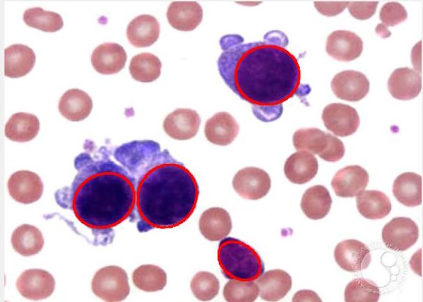
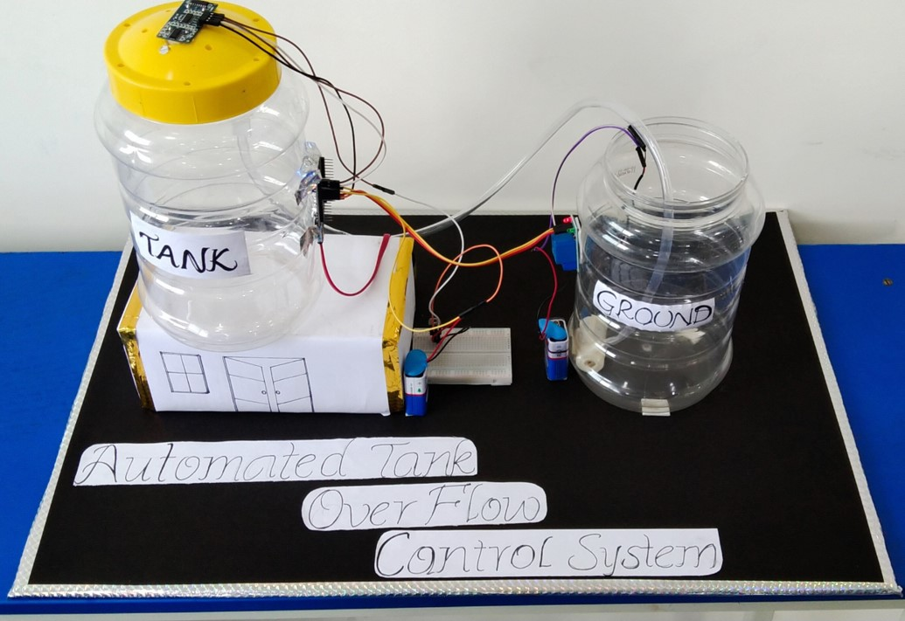
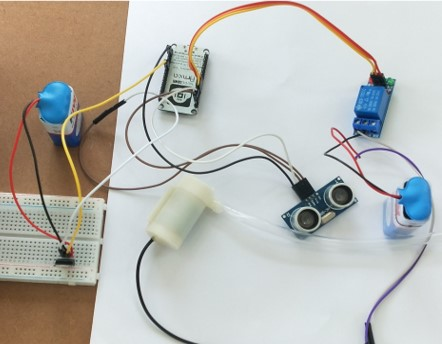

Project-1
SEGMENTATION AND DETECTION OF WBC USING IMAGE PROCESSING
The main Objective of this is to find the White Blood Cells count using Digital
Image Processing (DIP) from
blood smear images captured from a compound microscope.
The
Extraction of microscopic images is done by using Edge Detection & Morphological operations.

Project-2
TANK OVERFLOW CONTROL SYSTEM
Wireless Tank Overflow Control Using Ultrasonic sensor & NODE MCU is
an amazing and very useful project.
The objective of this project is to prevent wastage of water.
It simultaneously sends the data to the Blynk clouds using internet.
User can monitor the water
level in a smart phone using Blynk app.
